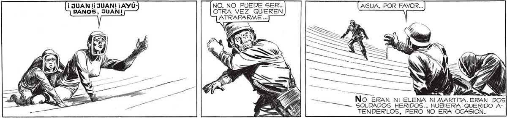
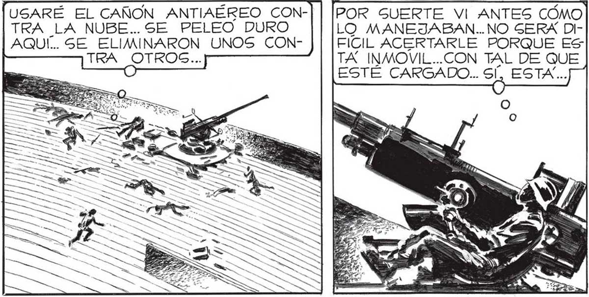

ES UNA SUPOSICIÓN LOCA..PERO NO SE ME OCURRE OTRA...¡EN EGA NUBE PUEDE ESTAR EL FOCO PRODUCTOR DE LAS AA ¡O COMO PARA OCULTAR ALGO! ¡ESO! = ESAS NUBES HAN DE ESTAR PARA EN-fu =u MASCARAR ALGO... Y LO QUE ESTAN —-|====> | OCULTANDO, NO PUEDE SER OTRA COGA QUE AQUELLA NUBE MAS ALTA... 2. Y) / / <é Y) y a >» ¡EGSA NUBE ESTA INMÓVIL, JUSTO ENCIMA NUESTRO! i Y ES DE FORMA DISTINTA A LAS DEMAS. E NO, NO PUEDE SER... OTRA VEZ QUIEREN a No ERAN NI ELENA Ni MARTITA. ERAN DOS CTA SOLDADOS HERIDOS... HUBIERA QUERIDO ATENDERLOS, PERO NO ERA OCASION. USARÉ EL CAÑON ANTIAÉREO CON-] | [POR SUERTE VI ANTES CÓMO TRA LA NUBE... SE PELEO DURO LO MANEJABAN.. NO GERÁ DIAQUÍ. SE ELIMINARON UNOS CON- FIÍCIL ACERTARLE PORQUE ES TRA OTROS... TA INMOVIL...CON TAL DE QUE e ESTÉ CARGADO... ss ES. METROS... NO HAY QUE HACER NINGUNA CORRECCION. SOLO CENTRAR LA NUBE... h Na e 4 h y as APA A 7 Y / Zñ lBA A DISPARAR CUANDO “ UN ALARIDO MÚLTIPLE ME RETUMBO EN EL CEREBRO. 131

